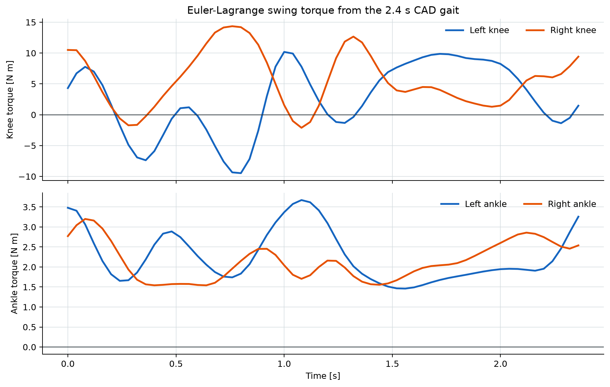
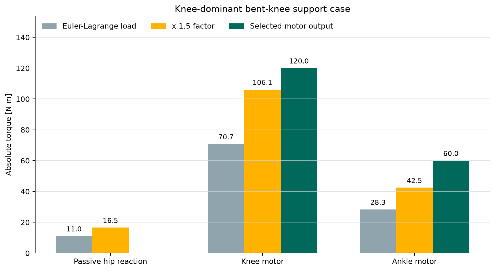

ExoEskeleto lower-limb exoskeleton - knee-dominant actuator sizing grounded in the updated manufacturing drawing and supplied CAD gait.
Reference user80 kg
Frame6.49 kg Al 6061-T6
Gait input2.4 s / 60 frames
Analysis date28 July 2026
Selected output ratings - each side
Knee 120 N m peak | Ankle 60 N m peak
Hip motor torque is 0 N m because the current manufacturing drawing defines the hip as a passive pivot.
Passive hip
0N m motor
Reaction load remains and must be carried structurally.
Knee - highest
120N m peak
60 N m provisional continuous output.
Ankle
60N m peak
30 N m provisional continuous output.
Engineering sizing study only. Complete native CAD mass properties, measured ground-reaction forces, structural FEA, gearbox life analysis, thermal validation, and instrumented bench testing before human use.
1. Evidence audit and model basis
Precedence decision. The 26-07-2026 manufacturing drawing is the controlling hardware source. It supersedes the earlier steel/electromagnet drawing and states: 6.49 kg total frame, 400 mm thigh, 420 mm shank, knee and ankle actuation, passive hips.
Workspace source
How it was used
ExoEskeleto_Manufacturing_Drawing (1).pdf
Authoritative material, total frame mass, link lengths, and actuator architecture.
ExoEskeleto Drawing v1.pdf
Earlier geometry cross-check only. Its steel/electromagnet BOM conflicts with the updated drawing.
ExoEskeleto_final.step
Assembly geometry and density entities; no exported per-part mass, COM, or inertia table.
ExoEskeleto_final.SLDASM
Zero-byte file; no usable assembly data.
Exoskeleton.stp.SLDPRT
SolidWorks container without a supplied neutral mass-properties report.
blended.json + gait GIF/frame set
60-frame bilateral kinematics and measured 2.4 s animation cycle.
JPG renders and videos
Visual confirmation of the bilateral sagittal linkage; no quantitative motor or load data.
AEGIS and ExoVLA-WM PDFs
Controller/safety context only; no mechanism-specific torque, motor, gearbox, or GRF input.
Actuator vector. The inverse-dynamics hip entry is a reaction. The commanded output is tau_motor = [0, tau_knee, tau_ankle]^T.
3. Supplied CAD gait - swing inverse dynamics
The 60-frame blended.json sequence was evaluated over the 2.4 s GIF cycle. Because the export contains no joint-zero or sign metadata, frame 1 is calibrated as vertical thigh, extended knee, horizontal foot. Ground reaction is zero, so these results represent swing/inertial demand only.

Figure 1. Powered-joint output torque from the supplied bilateral CAD gait. Knee torque exceeds ankle torque on both sides.
Side
Joint
Peak torque
RMS torque
Peak speed
Peak power
Left
Passive hip reaction
34.67 N m
15.21 N m
1.679 rad/s
39.39 W
Left
Knee motor
10.18 N m
6.24 N m
2.007 rad/s
17.84 W
Left
Ankle motor
3.67 N m
2.36 N m
1.157 rad/s
3.54 W
Right
Passive hip reaction
43.05 N m
20.97 N m
2.186 rad/s
55.26 W
Right
Knee motor
14.35 N m
7.22 N m
1.512 rad/s
16.70 W
Right
Ankle motor
3.20 N m
2.19 N m
0.965 rad/s
2.41 W
Interpretation limit. This animation is not a force-plate gait dataset. Its useful role is a first dynamic and speed check. It cannot size stance torque without synchronized foot force and COP measurements.
4. Governing knee-dominant support case
Load state
q = [-60, -60, 120] deg; foot horizontal.
qdot = 0 and qdd = 0 at the peak quasi-static state.
Combined mass = 80 + 6.49 = 86.49 kg.
Total support = 1.2 body/frame weight.
Per-leg vertical force = 509.08 N.
COP = 60 mm forward of ankle.
Mass matrix at the posture
M = [[2.668720, 0.867689, 0.048529], [0.867689, 0.500985, 0.002769], [0.048529, 0.002769, 0.050817]] kg m^2
The inertia and Coriolis vectors are zero in this peak quasi-static snapshot. The nonzero result comes from gravity and the mapped ground force.

Figure 2. Euler-Lagrange support torque, 1.5 factor, and rounded output selection. The hip value is a passive reaction, not a motor rating.
Joint
Gravity G
J^T F
tau = G - J^T F
1.5 abs(tau)
Passive hip reaction
+14.423
+25.454
-11.031
16.546 N m
Knee motor
-5.627
-76.362
+70.735
106.103 N m
Ankle motor
+2.245
+30.545
-28.300
42.450 N m
Why the knee is highest. The ground-reaction-force line is about 150 mm behind the knee but only 60 mm ahead of the ankle. That real moment-arm difference, combined with a passive hip, produces the requested motor hierarchy without modifying the equations.
The maximum calculated swing reaction is 43.05 N m; applying 1.5 gives 64.58 N m before impact/fatigue allowance. The hip pivot, stops, fasteners, bearing, and pelvis structure must carry that load even though commanded motor torque is zero.
Thermal qualification is still required. The continuous targets are provisional 50% peak selections. Final motor current and winding temperature require the loaded torque-speed duty cycle and reducer efficiency map.
6. Sensitivity and the limits of "knee highest"
User mass sensitivity - same support posture
User mass
Raw knee
Factored knee
Raw ankle
Factored ankle
Implication
60 kg
54.14
81.20 N m
21.61
32.41 N m
120/60 targets have margin.
70 kg
62.44
93.65 N m
24.95
37.43 N m
120/60 targets have margin.
80 kg
70.74
106.10 N m
28.30
42.45 N m
Nominal design case.
90 kg
79.04
118.55 N m
31.65
47.47 N m
Near 120 N m knee limit.
100 kg
87.34
131.00 N m
34.99
52.49 N m
Use at least 140 N m knee.
Centre-of-pressure sensitivity - 80 kg user
COP forward
Hip reaction
Knee torque
Ankle torque
Dominant powered joint
20 mm
9.33
91.10
7.94
Knee
40 mm
0.85
80.92
18.12
Knee
60 mm
11.03
70.74
28.30
Knee
80 mm
21.21
60.55
38.48
Knee
100 mm
31.39
50.37
48.66
Knee, nearly equal
120 mm
41.58
40.19
58.85
Ankle
Physics boundary. Knee is highest for support/sit-to-stand with COP near the ankle. During far-forward toe-off, ankle torque can exceed knee torque. If full powered push-off is in scope, the ankle must be re-sized from measured force-plate and COP histories; the load cannot be removed merely to preserve a preferred ranking.
7. Release conditions and conclusion
Data required for final sizing
Maximum user mass, payload, intended task, and assistance percentage.
Native CAD mass, COM, and inertia for every moving part, motor, gearbox, and attachment.
Exact motor and reducer efficiency, backlash, reflected inertia, thermal curve, output-bearing moment, and fatigue life.
Calibrated zero angle and axis sign for every CAD Revolute channel.
Loaded joint angle, velocity, and acceleration versus time.
Synchronized ground-reaction force and centre-of-pressure trajectories.
Friction, cuff forces, mechanical-stop loads, emergency braking, and power-loss support strategy.
Instrumented dummy-load bench validation before any human test.
Inputs, validation results, peaks, support decomposition, ratings, and limitations.
Motor_Torque_Analysis_ExoEskeleto_v2.md
Human-readable calculation record.
For the 80 kg reference case: Knee: 120 N m peak / 60 N m continuous
Ankle: 60 N m peak / 30 N m continuous
Hip motor: 0 N m - passive pivot
knee motor torque > ankle motor torque > hip motor torque
Safety status. This is an actuator-sizing study, not a medical-device approval or human-use certification. Bench-test the complete transmission and fail-safe support system with instrumented surrogate loads before any wearer trial.